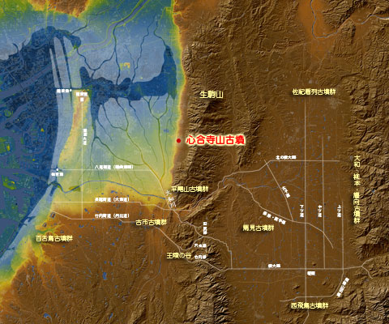
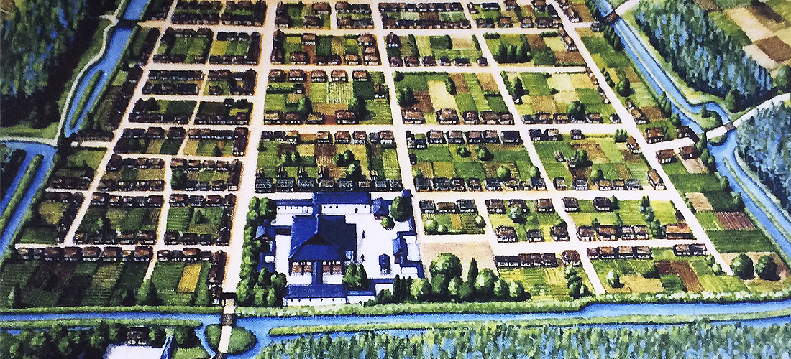

八尾の歴史は、ただ古いだけでなく、日本の政治・経済の中心地である大和（奈良）と難波（大阪）を結ぶ交通の要衝として、常に時代の表舞台にありました。ここでは、教科書には載らない、八尾の地が持つダイナミックな歴史の側面を深掘りします。
I. 古代：河内の勢力とヤマト王権
1. 心合寺山古墳と巨大勢力
八尾市にある心合寺山古墳（しおんじやまこふん）は、全長160mを超える中河内地域最大級の前方後円墳です。築造は5世紀中頃と推定され、これはヤマト王権がその勢力を全国に拡大していた時期と重なります。
この古墳の巨大さは、この地域の豪族が王権の中枢と非常に密接な関係にあったことを示唆しており、当時の河内地方が畿内の物流・政治において重要な役割を担っていた証拠です。周辺には多くの群集墳も残され、勢力の広がりを感じさせます。
2. 渋川道（竹内街道）の役割
八尾を通る竹内街道（日本の道100選）は、古代の官道である「竹内道」をルーツに持ちます。難波津と飛鳥・奈良を結ぶ重要なルートであり、八尾はまさにその中継点でした。この街道を通じて、大陸の先進文化や物資が王権の拠点へと運ばれた歴史的背景があります。
II. 中世・近世：自衛都市と河内商人
1. 織田信長も認めた八尾寺内町の成立
八尾市街地の中心部、特に久宝寺・大信寺周辺に広がる八尾寺内町は、戦国時代に一向宗（浄土真宗）の勢力を基盤に築かれた自衛のための宗教都市です。周囲を堀や土塁で囲み、有事には町全体で防御する独自の自治機能を持っていました。
興味深いのは、この町が単なる防御施設ではなく、経済活動も活発な商工業の中心地として機能した点です。当時の支配者、特に織田信長が久宝寺に陣を構えるなど、その戦略的な重要性が高く評価されていました。碁盤の目のような区画割りが現代にも残されています。
2. 経済を支えた河内木綿と河内商人
江戸時代、八尾は綿花の栽培と加工が盛んな地域でした。特にこの地で生産された「河内木綿」は、その品質の高さから全国的に流通しました。
これを背景に、八尾の商人は「河内商人」として、近江商人や伊勢商人と並ぶほど商業手腕を発揮し、全国を股にかけた取引を展開しました。彼らが蓄積した富と文化が、今日の八尾の祭礼や町並みに色濃く残っています。
III. 現代：ものづくりと航空のまち
1. 「八尾空港」の軍事・産業的変遷
八尾空港の歴史は、太平洋戦争中の「大正飛行場」に遡ります。戦時中は軍事利用されましたが、戦後は民間空港として再生し、現在も自家用機や訓練機、そして災害時の物資輸送拠点として重要な役割を担っています。
2. 中小企業集積地の技術力
八尾市は、東大阪と並ぶ「ものづくりのまち」として知られ、特に金属加工、機械部品、プラスチック成形などの分野で高い技術を持つ中小企業が密集しています。これらは河内商人の時代から続く商業・産業の土壌の上に花開いたものです。